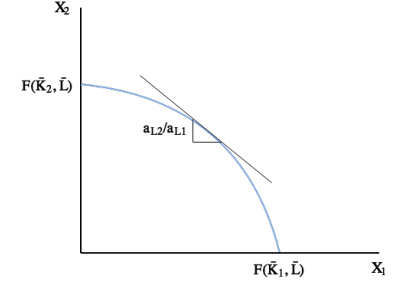
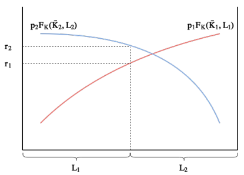

ECON2252 Lecture 4 (1)
到目前为止，我们学习过的模型都告诉我们，贸易是有益的。但是，在现实中，为什么这么多人反对贸易？
在上节我们学习的李嘉图模型中，有一个关键假设：劳动力是自由流动的。也就是说，在李嘉图模型中，只要国家开放贸易，劳动者就会立刻被重新分配到具有比较优势的产业，因此所有人都可以从贸易中获益。
然而，这个假设是很难成立的。在现实中，我们常常看到劳动者被困在他们原本的产业中，而这些产业往往并不是具有比较优势的产业，所以这些劳动者是无法享受贸易带来的全部好处的。
因此，接下来我们将讨论国际贸易的分配结果，我们主要聚焦下面两个问题：
- 我们该如何为此建模？
- 这对贸易有何政策含义？
本章核心：
- 总体而言，贸易是有益的。
- 但这些收益在不同群体之间的分配可能不均衡。
- 特别是，一些群体可能会受益，而一些群体可能会受损。
- 我们不应因为一些群体受损而停止全球化。
为了研究上述问题，我们将继续延伸李嘉图模型，加入一个新的生产要素——资本。我们假设：
- 资本是特定于某个行业的。
- 要素的特殊性通常是短期的。
- 模型将会允许我们研究对于不同的要素，贸易是如何影响收入的。
事实上，我们可以根据研究旨趣灵活调整这些因素。例如我们想研究不同技能群体的分配效应，我们就可以将这两个因素建模为高技能劳动力和低技能劳动力，而低技能劳动力可能特定于特定行业。
学习目标：
- 理解要素流动性为何对福利结果很重要。
- 学会解决两种生产要素下的公司问题。
- 理解当相对价格变动时，实际要素收入会发生什么变化。
- 理解为什么贸易对不同的群体会产生福利分配影响。
- 用实际工资衡量福利。
- 哪些人受益？哪些人受损？
Closed Economy Model
我们依然假设一个国家 Home ：
- Home 中的家庭消费 $C_1^H,C_2^H$ 量的两种商品，产生效用 $U(C_1,C_2)$ .
- $U$ 具有效用函数的一切标准性质。
- 两种产业（或者说商品）1 和 2 .
- 这两种商品生产时都使用劳动力和资本。
- 市场结构为完全竞争市场。
- 要素禀赋为
- $\bar{L}$ 单位的劳动力。
- $\bar{K_1}$ 单位的产业 1 资本。
- $\bar{K_2}$ 单位的产业 2 资本。
- 要素流动性为
- 劳动力可以在两种产业间自由流动。
- 资本则是产业特定的。
Demand
我们首先来看需求端，也就是家庭面临什么问题。
Budget Set
现在，由于我们加入了资本这一新的生产要素，所以家庭收入 $I$ 就取决于这家是工人还是资本家了。我们有如下式子
其中
- $w$：工人收到的工资。
- $r_1$：产业 1 的资本租金率（可以简单地理解成使用资本的成本）。
- $r_2$：产业 2 的资本租金率。
由于劳动力可以自由流动，就像我们在上节分析的那样，两个行业里的工资会趋同，所以这里只有一个 $w$ 。
而对于资本，由于其是产业特定的，所以会有不同的资本租金率 $r_1,r_2$ 。
和之前一样，我们可以根据家庭的预算限制画出预算集
Utility Maximization
和此前一样，家庭被动地接受市场价格。即对于家庭而言，价格和收入都是外生的。
家庭通过决定 ${C_1^H,C_2^H}$ 来最大化效用，有
和之前我们学习的模型相同，有边际替代率以及效用曲线和预算线
和我们之前讨论的一样，图中的三条效用曲线代表不同的消费组合 ${C_1^H,C_2^H}$ ，太高的曲线表示该消费组合超出了家庭预算，太低代表家庭预算没用完，效用没最大化，只有相切的时候是最大化效用的。
Relative Demand
和之前相同，不同的相对价格 $p_r^H$ 会导致对 $C_1^H,C_2^H$ 不同的选择，例如当商品 1 相对商品 2 变得更贵时，商品 1 相对商品 2 的消费量就会下降。
相对需求曲线如下图
Production
而在供给端，对于国内企业而言，有如下生产函数
其中
- $X_i$：商品 i 的生产量。
- $F$：生产函数。
我们可以定义边际资本产出（MPK）和边际劳动产出（MPL）：
与李嘉图模型不同，在这里，边际产出并不是一个定值。相反，当另一个因素保持不变时，每个因素的收益都会递减。
为什么和李嘉图模型不同？
特定要素模型中边际产出递减 vs 李嘉图模型中边际产出恒定 的关键原因在于生产函数的形式不同（线性 vs 凹性）。
回忆在李嘉图模型中，我们有
在这里，生产函数是线性的，没有边际收益递减。这是因为在李嘉图模型中，劳动是唯一要素，且生产技术不变，也就不存在其他要素固定导致的边际递减了。
而在特定要素模型中，生产函数往往为凹函数（例如柯布-道格拉斯函数），当其他要素固定时，增加一要素的边际产出递减。
总的来说，李嘉图模型简化了生产过程（仅引入劳动一个生产要素），因此无法解释要素的价格变动（例如工资、租金等）。
而特定要素模型引入了多个要素（资本和劳动），因此能分析贸易对要素收入的影响。
Marginal Products
所谓要素的边际产出递减体现如下：
例如，保持资本投入不变时，当劳动力投入增加，产出的增加速度会下降：
这条曲线在每一点的斜率就是在某个特定的劳动力投入时的边际劳动产出 $a_{L_i}$ ：
换句话说，保持资本投入不变时，当劳动力投入增加，边际劳动产出就会减少，所以我们可以画出劳动力投入 $L_i$ 与其边际劳动产出 $a_{L_i}$ 的图像：
对于边际资本产出 $a_{K_i}$ 也是同理。
Production Possibilities Frontier
在我们研究完边际产出后，我们就回到供给端最核心的问题：在生产技术不变的情况下，每种商品有多少可以被生产出来？
换句话说，我们要得到包含所有可能生产束的生产可能边界，我们可以得到 Home 的生产可能边界如下：

可以发现，与李嘉图模型不同，这里生产可能边界是一条曲线。这是因为生产可能边界的斜率是 MPL 的比值，而李嘉图模型中 MPL 是一个定值，所以是一条直线。在本模型中，就如我们上节讨论的那样，
边际产出并不是一个定值。相反，当另一个因素保持不变时，每个因素的收益都会递减。
所以，此时的 PPF 自然就是一条斜率不断变化的曲线了。
Profit Maximization
现在我们知道了所有可能的生产组合，那么企业将如何选择组合以使其利润最大化呢？
首先我们要重复我们之前的假设——市场是完全竞争的。也就是说企业被动地接受市场价格而不是操纵它，根据市场价格选择每种生产要素的投入来最大化利润。
对于一家企业，最大化商品 i 的利润问题有如下正式形式
其中
- $p_iF_i$：市场价格乘以生产函数，就是企业生产出来的产品卖的钱。
- $r_iK_i$：资本租金率乘以资本，就是企业投入生产要素——资本的成本。
- $wL_i$：工人工资乘以劳动力，就是企业投入生产要素——劳动力的成本。
我们不难发现，和李嘉图模型相比，此时企业有了一个新的选择，就是决定投入劳动力和资本之间的比例，也就是两者的此消彼长。
这里需要留意的是虽然对于产业 i 而言，其总资本供给 $\bar{K_i}$ 是固定的，但企业始终可以决定投入多少 $K_i$ 。
但从整个市场的角度来看，当市场处于均衡时，要素价格一定会使得 $K_i=\bar{K_i}$ 。
这是因为产业 i 的总资本供给 $\bar{K_i}$ 是固定的，这些资本由许多资本所有者拥有，我们可以看两种情况：
- 如果在一个给定的价格 $r_i$ 下，**所有企业对资本的总需求 $K_i$ 小于总供给 $\bar{K_i}$，会发生什么？
- 将出现资本的超额供给。一些资本所有者会发现他们的资本租不出去。
- 为了将资本租出去，这些资本所有者会愿意接受一个更低的租金率 $r_i$。
- 因此，资本租金率 $r_i$ 会下降
- 反之，如果在一个给定的价格 $r_i$ 下，所有企业对资本的总需求 $K_i$ 大于总供给 $\bar{K_i}$，会发生什么？
- 将出现资本的超额需求。一些企业会租不到它们想要的资本量。
- 为了确保能租到资本，企业会愿意支付更高的租金率 $r_i$。
- 因此，资本租金率 $r_i$ 会上升。
所以，市场均衡就发生在这样一个状态：资本租金率 $r_i$ 调整到某一个水平，使得所有企业“自由选择”的资本总投入量，恰好等于整个经济的资本总供给量。
回到利润最大化问题，在式子
中，我们分别对 $L_i,K_i$ 求偏导并令其等于 0 ，就能得到劳动力和资本的一阶条件：
其中
- $F_L(K_i,L_i)=\frac{\partial F}{\partial L_i}$
- $F_K(K_i,L_i)=\frac{\partial F}{\partial K_i}$
这两个条件的含义
对于第一个条件 $w=p_i F_L(K_i,L_i)$ ：
左边：$w$ 是企业使用一单位劳动力的成本（工资率）。
右边：$p_i F_L(K_i,L_i)$ 是企业使用一单位劳动力的收益（边际收益产品）。其中 $p_i$ 是产品的价格，$F_L(K_i,L_i)$ 是增加一单位劳动力能多生产多少产品（边际产量，MP）。
这个条件的含义是企业会雇佣劳动直到劳动的边际收益产品等于工资率。如果边际收益产品大于工资，企业会继续雇佣；如果小于，企业会减少雇佣。对于第二个条件 $r_i=p_i F_K(K_i,L_i)$ ：
左边：$r_i$ 是企业使用一单位资本的成本（资本租金率）。
右边：$p_i F_K(K_i,L_i)$ 是企业使用一单位资本的收益（边际收益产品）。其中 $p_i$ 是产品的价格，$F_K(K_i,L_i)$ 是增加一单位资本能多生产多少产品（边际产量，MP）。
这个条件的含义是企业会租用资本直到资本的边际收益产品等于资本租金率。
这个式子也说明了，工资 $w$ 和资本租金率 $r_i$ 是由这些要素的边际收益产品（MRPK, MRPL）决定的，其中
上面的式子还说明了实际收入等于边际产品：
其中
- $\frac{w}{p_i},\frac{r_i}{p_i}$：对于工人而言，实际收入就是名义工资除以市场价格；对于资本家而言，实际收入就是名义资本租金率除以市场价格。
- $F_L,F_K$：对生产函数分别求生产要素：劳动力和资本的偏导，得到的就是边际产品（MPL, MPK）。
- $a{L{i}},a{K{i}}$：表示边际产品（产出）。
我们知道，产业 1 和 2 的工资 $w$ 是相同的（见前文），所以 MRPLs 也就是相同的了：
所以，相对价格就等于相对 MPL 的倒数。
这和李嘉图模型是一致的，除了在这里边际产品 $a{L_2},a{L_1}$ 不是定值外。
Market Clearing
现在，我们有了需求端（家庭）的消费束，供给端（企业）的生产束，以及它们各自最大化效用 / 利润的策略。接下来我们该讨论两者在市场中的真实互动——市场出清了。
我们有如下出清条件：
- 对于资本，市场出清要求（记住资本是产业特定的，不像劳动力那样可以自由流动，所以要分别相等）：
- 对于劳动力，市场出清要求（劳动力可以在产业间自由流动，所以总和相加相等即可）:
- 对于商品，市场出清要求：
以上市场出清条件将决定要素和商品的价格。
Determination of Wages
我们首先来看工资是如何决定的。
我们的模型将要建立类似这样的一个链条：
外生冲击（如国际贸易、技术变革） → 商品价格变化 → 要素价格和收入分配变化
为了方便我们的研究，我们首先将商品价格 $p_1,p_2$ 设置为外生的，这样我们就能隔离并专注于研究这个链条的后半部分，即“商品价格变化如何导致要素价格变化”。
我们看到，当商品价格固定时，以产业 1 为例，劳动的边际收益产品（MRPL），即名义工资是随着劳动投入 $L_1$ 的增加而降低的：
对产业 2 也是同理，当 $L_2$ 增加时，劳动边际收益产品也是降低的：

平衡的劳动分配必须使得两个产业的 MRPLs 是相等的。我们可以设想，如果产业 1 的 MRPL 大于产业 2，那么工人就会往产业 1 移动，导致产业 1 的 MRPL 降低，同时产业 2 的 MRPL 升高，最终两者相同。

这就决定了工资，因为我们前面证明了 $w=MRPL$ .
Determination of Rental Rates
实际上，平衡的劳动分配还决定了资本租金率。
我们看到，当 $L_1$ 增加时，产业 1 的资本边际产品，即资本租金率是增加的。
从直观上来说，当劳动力 $L_1$ 增加时，固定的资本存量被更密集、更有效地使用，因此每单位资本的生产力（边际产量）上升。而从数学上来说，$MPK=\partial F / \partial K$ ，这个偏导数通常是依赖于 $L$ 的数量的。
对产业 2 也是同理。
所以，平衡的劳动分配也决定了资本租金率。我们可以设想，如果产业 1 的资本租金率高于产业 2 ，企业就会倾向于往产业 2 投入资金，产业 1 中的资本持有者就会发现他们的资本租不出去，为了将资本租出去，这些资本所有者会愿意接受一个更低的租金率 $r_1$ ，因此，资本租金率 $r_1$ 会下降（道理和之前讲的总资本供给均衡相同）。
不过因为资本是产业特定的，所以两个产业的平衡资本租金率可能不同，也就是两条曲线不一定对称：

Relative Supply
我们已经讨论了均衡状态下的市场中的要素价格。现在，我们假设 $p_1$ 上升了，那么下图（平衡点）会发生什么样的变化呢？

我们不难看出，由于 $p_1$ 上涨，红色的曲线必然会向上移，于是有
也就是说，产业 1 的 MRPL 上升了，即更多的劳动会被分配给产业 1：
现在，我们再假设 $p_2$ 下降，看看下图会发生什么变化。

我们不难看出，由于 $p_2$ 下降，蓝色的曲线必然会向下移，于是有
也就是说，产业 2 的 MRPL 下降了，即更多的劳动会被分配给产业 1：
无论是 $p_1$ 上升还是 $p_2$ 下降，相对价格 $\frac{p_1}{p_2}$ 是上升的，同时相对供给 $\frac{X_1}{X_2}$ 也会上升，因为就如前面所述，更多的劳动被分配给了产业 1 ，所以产业 1 的产量 $X_1=F(K_1,L_1)$ 自然就会增加。下图是相对供给曲线
Determination of relative goods price
我们已经讨论了相对价格的变动会如何影响相对供给。那么，相对价格又是如何决定的呢？
事实上，相对价格是由商品市场出清要求：相对需求 = 相对供给决定的，见下图：
一旦相对价格定下来了，那么下列变量也都定下来了：
- 相对劳动边际产出（MPL）：$\frac{a{L{1}}}{a{L{2}}}$；
- 这是由 $w=p1a{L{1}}=p_2a{L{2}}\implies\frac{a{L{1}}}{a{L_{2}}}=\frac{p_2}{p_1}$ 得来的；
- 均衡产出：$X_1,X_2$；
- 在 $\frac{p2}{p_1}$ 已知的情况下，我们可以从 $\frac{a{L{1}}}{a{L{2}}}=\frac{p_2}{p_1}$ 以及 $L_1+L_2=L$ 中求出唯一的 $L_1,L_2$ （$a{L{1}},a{L_{2}}$ 都是关于 $L_1,L_2$ 的函数）；
- 然后将其代入生产函数 $X_i=F(K_i,L_i)\enspace where \enspace i\in {1,2}$ 即可（$K_1,K_2$ 往往是已知的固定要素，而 $L_1,L_2$ 由相对价格决定）；
- 均衡消费：$C_1,C_2$；
- 假设经济封闭（无贸易），则 $X_1=C_1,X_2=C_2$ ；
- 若开放贸易，则 $p_1X_1+p_2X_2=p_1C_1+p_2C_2$ ；
上述结论也可以用下图展示：